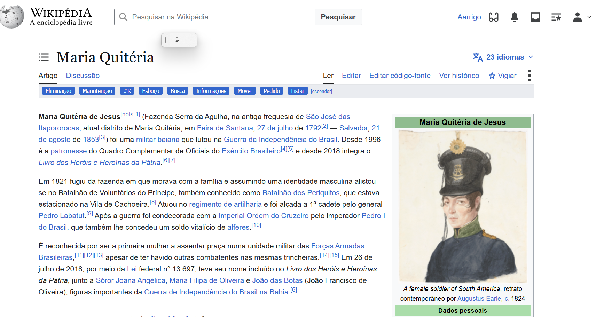

WIKIPÉDIA
Criação e melhoria de verbetes relacionados ao Museu Paulista, sua história e seu acervo.
SAIBA MAIS

Criação e melhoria de verbetes relacionados ao Museu Paulista, sua história e seu acervo.
SAIBA MAIS